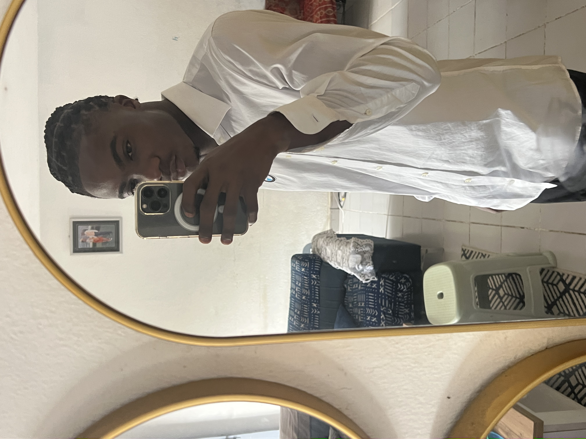

// Développeur Frontend

SAMBOLY
YVAN
Développeur Frontend passionné par la création d'interfaces web modernes, fluides et intuitives.
Mon objectif : transformer des idées en expériences web claires et performantes. Passionné par le design UI/UX, l'écosystème JavaScript et le développement d'applications rapides, accessibles et soignées dans les moindres détails.
Voir mes projets
Focus : UI/UX